11時半から3時まで、定食と丼ものをお出ししております。ごはんの大盛りは無料でお付けします。お品書きは仕入れによって都度変わりますので、その日の品とお値段は店頭に掲げております。お会計は現金にてお願いしております。
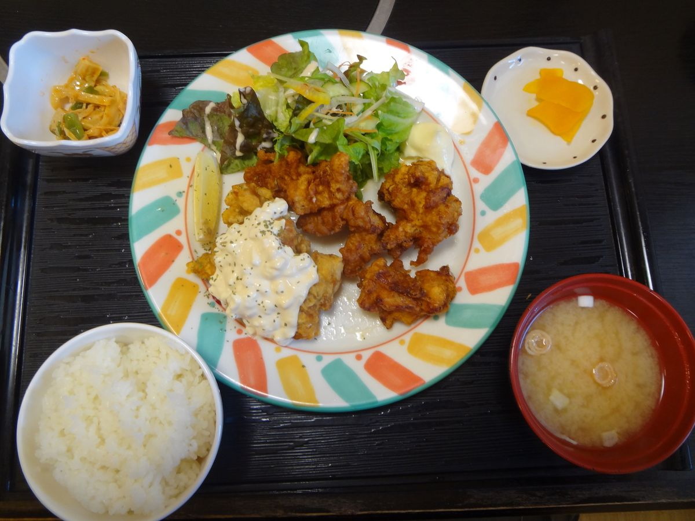
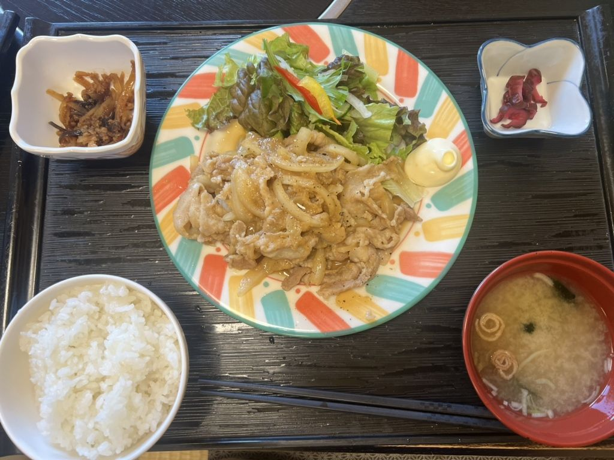
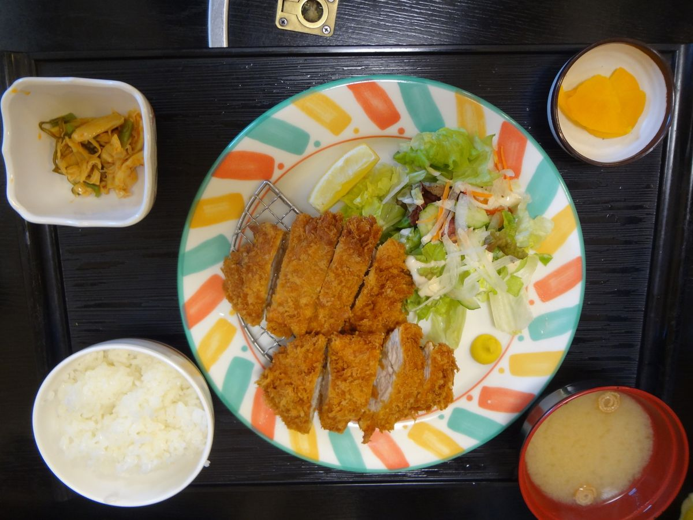
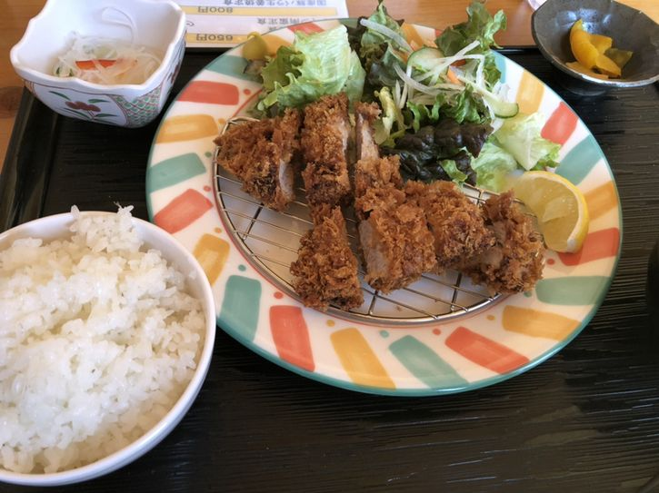
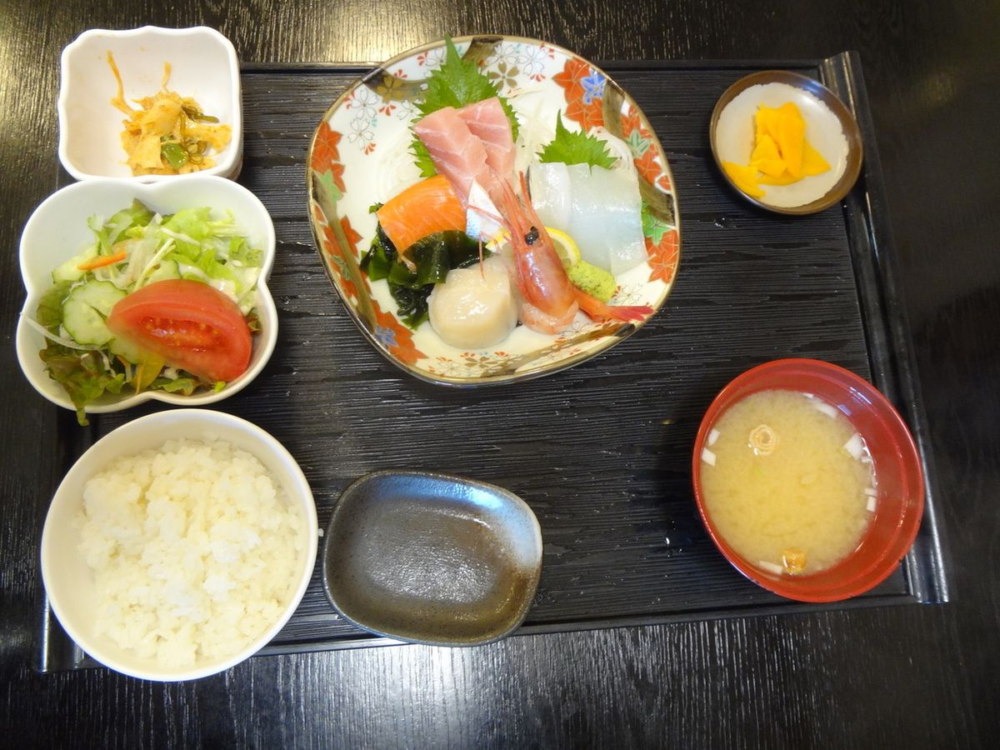
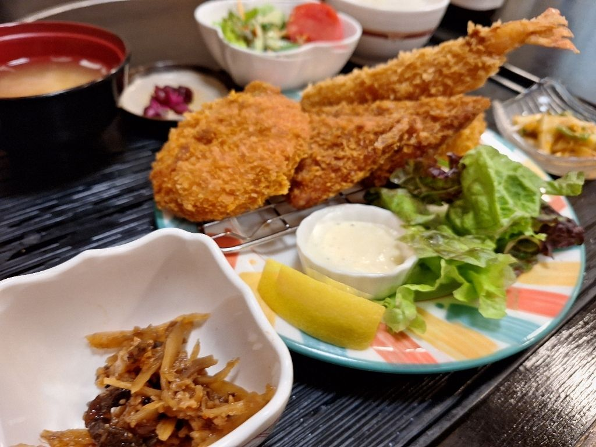
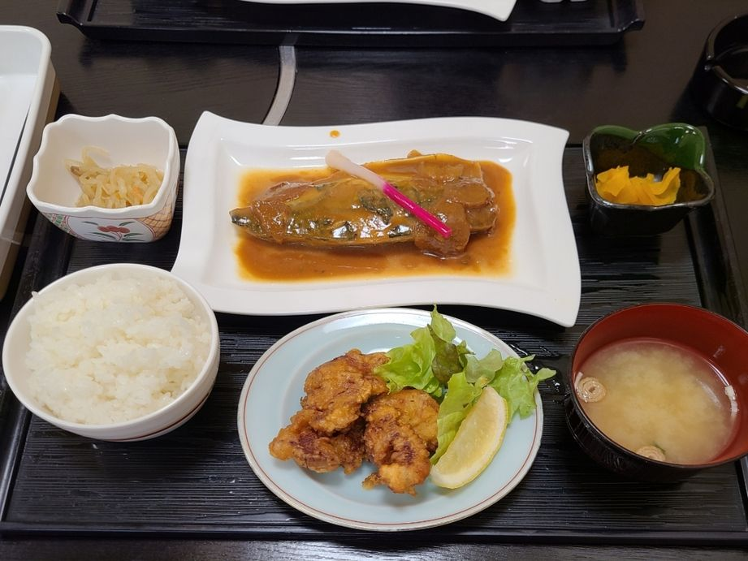
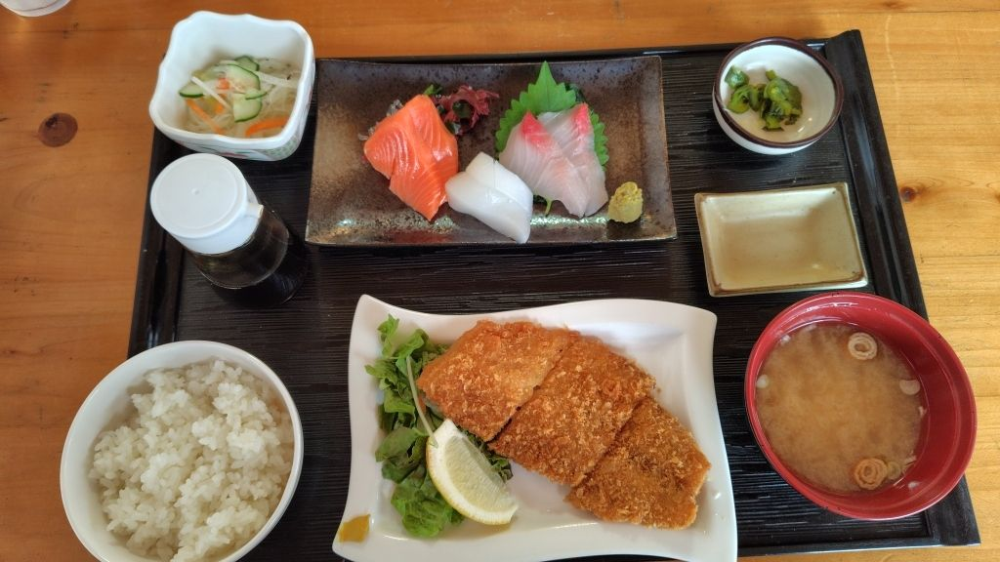
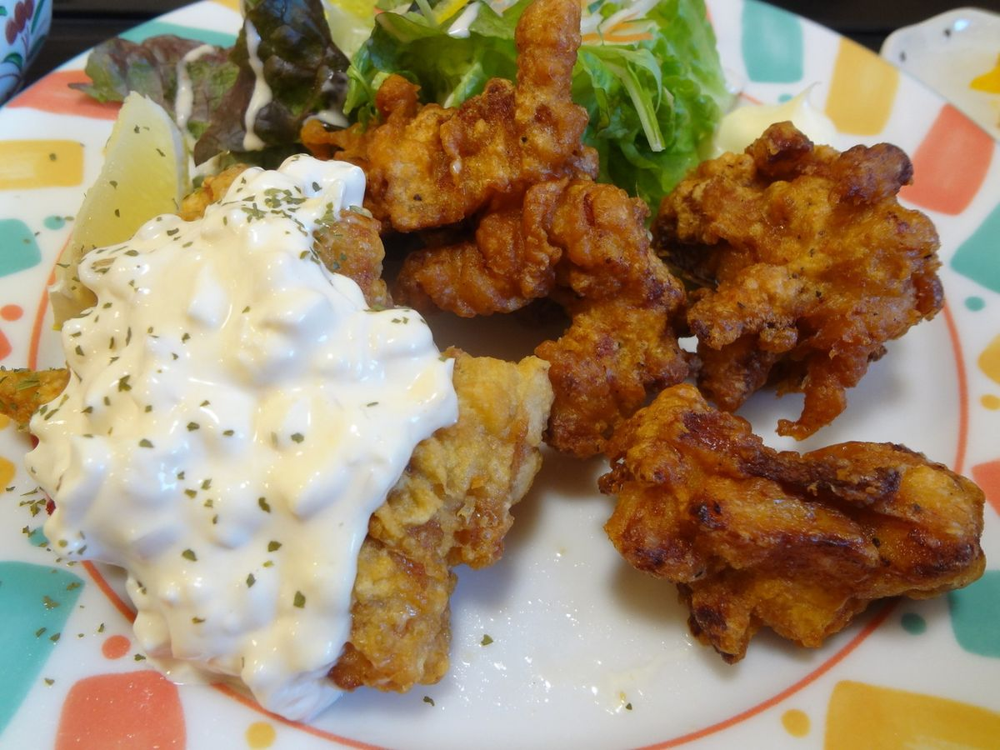
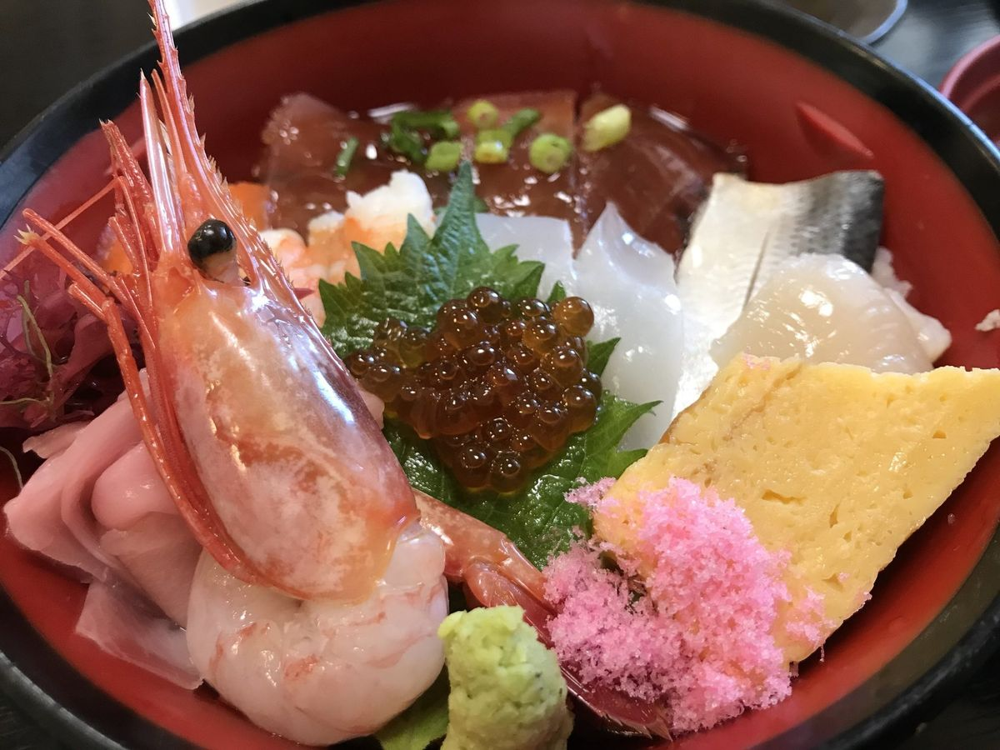
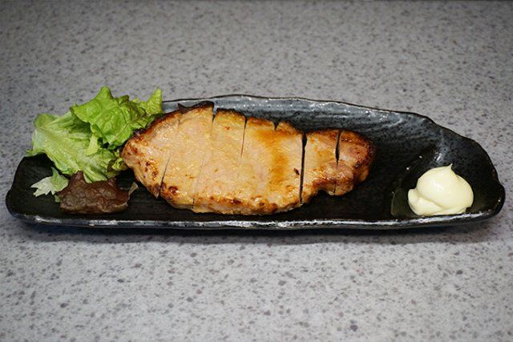
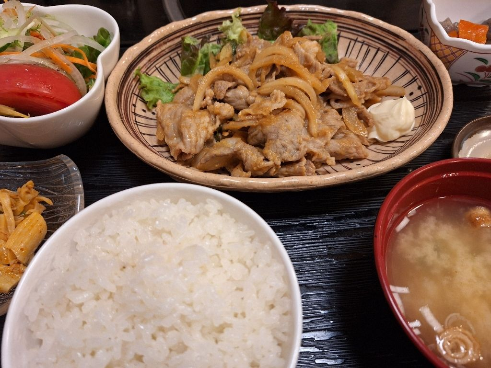
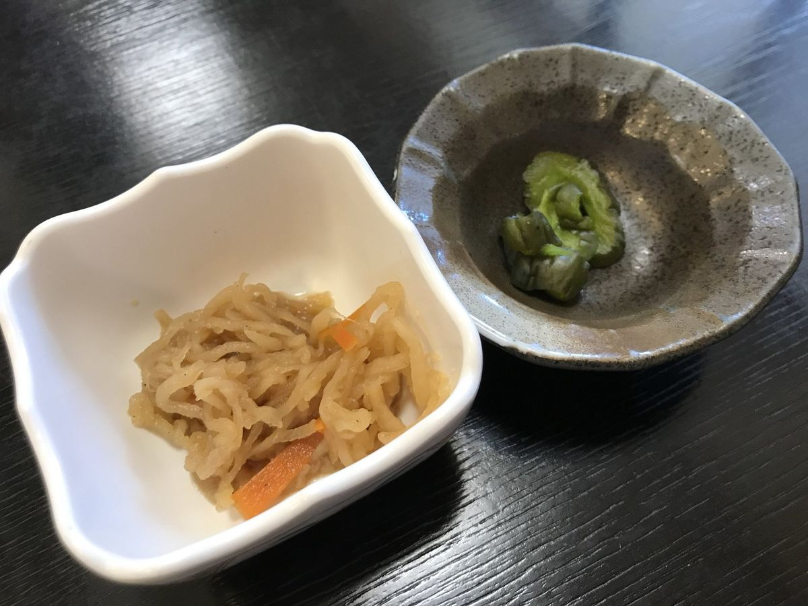
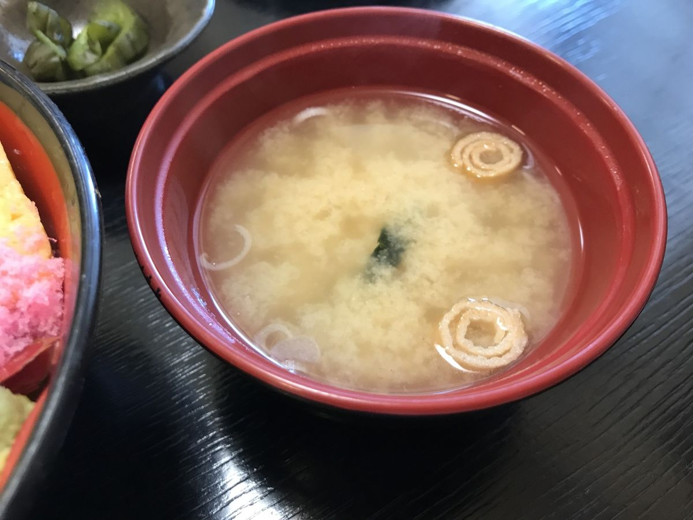
| 住所 | 〒306-0235 茨城県古河市下辺見2526 |
|---|---|
| 電話 | 0280-31-2238 |
| 営業時間 | 昼 11:30〜15:00 夜 17:00〜22:00 |
| 定休日 | 月曜日 |
| お席 | カウンター・テーブル・お座敷（最大60名様）・個室 |
| 駐車場 | 30台以上 |
| お支払い | 現金でのお支払いをお願いしております |